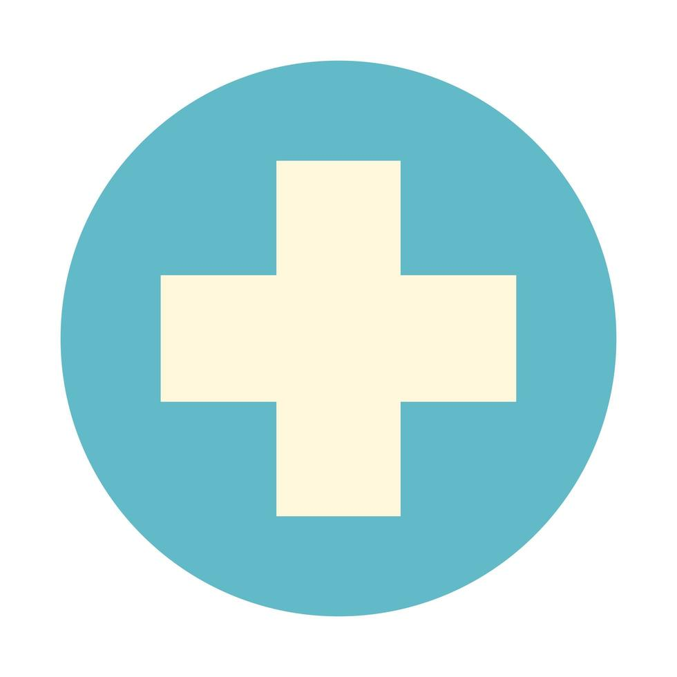

Bienvenido a Consultorio Lopez, un centro médico de nueva generación diseñado para transformar tu experiencia en el cuidado de la salud y ofrecerte soluciones rápidas, seguras y efectivas. Entendemos que tu tiempo y tu tranquilidad son lo más importante, por lo que hemos creado un espacio donde la excelencia clínica se une con una atención ágil y sin largas esperas. Contamos con equipamiento diagnóstico de última tecnología y un equipo multidisciplinario de especialistas altamente calificados que trabajan de manera coordinada para brindarte respuestas precisas desde tu primera visita. Ya sea que busques un chequeo preventivo de rutina, un diagnóstico especializado o el seguimiento continuo de un tratamiento, diseñamos planes médicos personalizados que se adaptan a tus necesidades reales. En del Consultorio Lopez, no solo tratamos síntomas; te acompañamos de forma cercana y transparente en cada etapa para ayudarte a alcanzar una mejor calidad de vida. Explora nuestras especialidades, conoce a nuestro equipo médico y programa tu cita en línea en menos de un minuto.